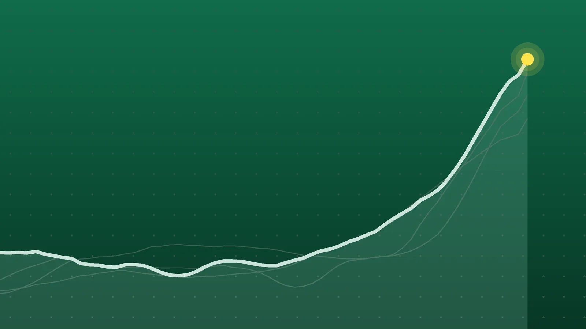

SportsExplainer
NBA Scores, Oct. 24: Nuggets Erase 23-Point Gap to Win in OT
Jamal Murray and Nikola Jokic combined for 77 points in Denver, while Philadelphia and Houston became the league’s only 3-0 teams after Saturday’s eight games.

Quick take
- Denver beat New Orleans 141-135 in overtime after trailing by 23; Jamal Murray scored 42 and Nikola Jokic had 35 points, 15 rebounds and 10 assists.
- Devin Booker scored 43, a Suns record for a home opener, as Phoenix beat a short-handed Golden State 131-122 for its first win.
- Joel Embiid posted a triple-double with LeBron James out, and Philadelphia beat Milwaukee 127-116 to improve to 3-0.
- Houston won 121-114 in Atlanta to join Philadelphia at 3-0, while Milwaukee and New Orleans fell to 0-3.
Why it's trending Eight NBA games on Saturday, Oct. 24, included a 23-point overtime comeback in Denver, a 43-point night from Devin Booker and triple-doubles from Jokic and Embiid.
NBA scores for Oct. 24
Denver needed overtime and a 23-point comeback to beat New Orleans 141-135 on Saturday, the wildest of the NBA’s eight games. Jamal Murray scored 42, and Nikola Jokic added 35 points, 15 rebounds and 10 assists, according to Land of Basketball’s daily summary. It was the only game of the night to go past regulation, and its 276 combined points led the slate.
Philadelphia stayed perfect without LeBron James. Joel Embiid recorded a triple-double in a 127-116 win over Milwaukee, and the 76ers and the Rockets are now the only 3-0 teams after Houston won 121-114 in Atlanta. In Phoenix, Devin Booker scored 43 against a depleted Golden State roster. No game was postponed.
All final scores
| Winner | Score | Loser | Note |
|---|---|---|---|
| Charlotte Hornets | 115-110 | Miami Heat | Brandon Miller 34; Grayson Allen’s four-point play broke a 104-104 tie |
| Cleveland Cavaliers | 125-121 | Brooklyn Nets | Donovan Mitchell 22; Michael Porter Jr. 28 for Brooklyn |
| Philadelphia 76ers | 127-116 | Milwaukee Bucks | Embiid 28 points, 11 rebounds, 10 assists |
| San Antonio Spurs | 122-106 | at Dallas Mavericks | Victor Wembanyama 23 points, 4 blocks |
| Washington Wizards | 124-120 | at Chicago Bulls | Trae Young 25; Caleb Wilson 30 and 14 for Chicago |
| Houston Rockets | 121-114 | at Atlanta Hawks | Jalen Johnson 26 points, 16 assists for Atlanta |
| Denver Nuggets | 141-135 (OT) | New Orleans Pelicans | Murray 42; Jokic triple-double |
| Phoenix Suns | 131-122 | Golden State Warriors | Booker 43; De’Anthony Melton 25 for Golden State |
Home teams went 5-3. Three home openers ended in losses: Atlanta, Dallas and Chicago.
Denver’s long climb back
The Pelicans were in control for most of the night. They shot 65.9% before halftime and led 53-30 in the second quarter, AP reported. They still led by 19 after three quarters and by eight, 124-116, with 1:37 to play.
Denver closed regulation on a 10-2 burst. Murray drew a foul on a 3-point try and made two of three free throws with 16 seconds left to tie it at 126, The Ticket reported. Jokic’s free throws gave Denver its first lead since the opening quarter, and rookie Trevon Brazile, playing his first home game, hit a 3 for a 133-129 edge. Brazile scored seven of his 17 in the extra period.
Murray and Jokic combined for 77 points, more than half of Denver’s total. Jokic’s triple-double was the 199th of his regular-season career, second only to Russell Westbrook’s 209, per AP. Trey Murphy III led the Pelicans with 26. New Orleans is 0-3 under first-year coach Jamahl Mosley.
Booker sets a Suns opener mark
Golden State played without Stephen Curry and Draymond Green, according to both SB Nation and Burn City Sports, and still led 57-54 at the break. The third quarter flipped it. Phoenix made 16 of its 20 shots in the period, including six of eight from deep, and took a 102-92 lead into the fourth.
Booker went 17 of 25 from the field and added seven rebounds and seven assists. His 43 points are a franchise high for a home opener, SB Nation reported, and they made up about a third of Phoenix’s 131. It was the Suns’ first win of the season. Melton, Yaxel Lendeborg (23) and Brandon Williams (20) kept the Warriors close.
Embiid fills the gap
With James sitting out for what the team listed as lower back pain management, Embiid posted 28 points, 11 rebounds and 10 assists, AP reported. The 10th assist came on a Jaylen Brown 3. Brown, playing on his 30th birthday, scored 27, and Tyrese Maxey had 26, per NBC Sports Philadelphia, which noted it is the second straight season the Sixers have opened 3-0. VJ Edgecombe chipped in 17 points and 13 rebounds. Jamie Jacquez Jr. scored 21 for winless Milwaukee.
What it means
Three games in, the early standings for Saturday’s teams look like this:
- 3-0: Philadelphia and Houston. The Rockets were 2-0 coming into Atlanta, per ESPN’s game page, and led 59-48 at halftime. Jalen Johnson’s 16 assists could not offset a deficit that reached 20 in the third quarter, SB Nation reported.
- 2-1: Atlanta, Charlotte and Washington.
- 1-2: Chicago, San Antonio and Dallas.
- 0-3: Milwaukee and New Orleans. Miami also remains without a win.
Three teams got their first win: Cleveland, Phoenix and San Antonio. The Cavaliers nearly gave back a 17-point lead in the last four minutes before Sam Merrill’s free throws sealed it, AP reported. The Spurs answered a blown 14-point lead by opening the fourth on a 17-5 run in Dallas, which played without Cooper Flagg (shoulder) and Kyrie Irving (rest), AP said.
Washington turned a five-point halftime deficit into a 15-point lead by winning the third quarter 40-20, according to the Yahoo Sports box score. Chicago has made 23% of its 3-point attempts through three games, AP noted. In Charlotte, the Heat erased a 22-point gap and tied it three times before Allen’s four-point play with 3:46 left, AP reported. For Friday’s results, see our Oct. 23 roundup.
What’s next
Sunday, Oct. 25, has seven games, all times ET, per Land of Basketball’s schedule:
- Los Angeles Lakers at Utah, 5 p.m.
- Indiana at Brooklyn, 6 p.m.
- LA Clippers at Oklahoma City, 7 p.m.
- Orlando at New York, 7 p.m.
- Toronto at Minnesota, 7 p.m.
- Detroit at Philadelphia, 7:30 p.m. AP reported James was expected to return for this one.
- Memphis at Sacramento, 9 p.m.
Brooklyn and Philadelphia are the only teams from Saturday playing again on Sunday.
Sources
- Land of Basketball NBA Daily Summary: Oct 24, 2026 - Key Stats, Game Scores & LeadersOct. 25, 2026
- Land of Basketball NBA Daily Summary: Oct 25, 2026 - Key Stats, Game Scores & LeadersOct. 25, 2026
- Associated Press via Yahoo Sports Jokic has triple-double, Murray scores 42 points in Nuggets' OT victory over PelicansOct. 24, 2026
- The Ticket Nuggets rally from 23 down to force overtime, beat PelicansOct. 24, 2026
- SB Nation via Yahoo Sports Game Recap: Booker drops 43 as Suns take down shorthanded Warriors, 131-122Oct. 25, 2026
- Burn City Sports Devin Booker drops 43 to lead Phoenix Suns past Warriors, building momentumOct. 24, 2026
- Associated Press via ABC News Embiid posts triple-double with LeBron out to keep 76ers perfect in 127-116 win over BucksOct. 24, 2026
- NBC Sports Philadelphia Observations after Sixers beat Bucks to move to 3-0, Embiid posts triple-doubleOct. 24, 2026
- SB Nation via Yahoo Sports Hawks can't keep up with Rockets in home opener, lose 121-114Oct. 25, 2026
- ESPN Rockets vs. Hawks game pageOct. 24, 2026
- Associated Press via ABC News Young scores 25 points as the Wizards hold off Wilson and the Bulls for a 124-120 winOct. 24, 2026
- Yahoo Sports Washington Wizards 124 - Chicago Bulls 120: Final score, results, recap, box score, statsOct. 24, 2026
- Associated Press via ABC News Brandon Miller scores 34 points as the Hornets beat the winless Heat 115-110Oct. 24, 2026
- Associated Press via CBS News New York Cavaliers survive a late Nets rally to win home opener 125-121Oct. 24, 2026
- Associated Press via Yahoo Sports Short-handed Mavericks lose 122-106 to Spurs in home openerOct. 24, 2026
Keep reading

NBA Scores, Oct. 25: Doncic Scores 52 as Lakers Stay Unbeaten
NBA scores for Oct. 25, 2026: all 7 finals, including Luka Doncic’s 52 in a Lakers win at Utah, Detroit’s win in Philadelphia and the Knicks’ 0-3 start.

NBA Scores, Oct. 23: Hawks Rout Hornets by Franchise-Record 47
NBA scores for Oct. 23, 2026: all 12 final results, including Atlanta’s record 128-81 win at Charlotte, Rockets 114, Spurs 110 and Celtics 107, Knicks 103.

Sports Scores, Oct. 22: Other Results From NBA, NFL and Tennis
Other sports results for Oct. 22, 2026: the NBA’s two games, Bears 30, Patriots 24 on Thursday Night Football, and 20 WTA and ATP singles results.